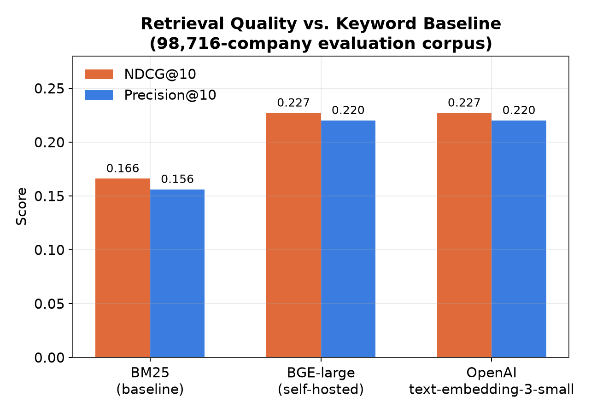
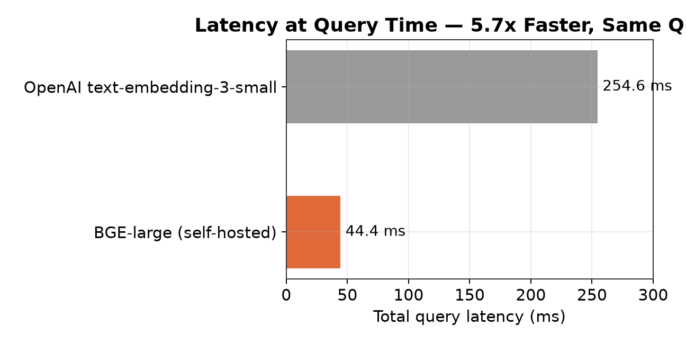
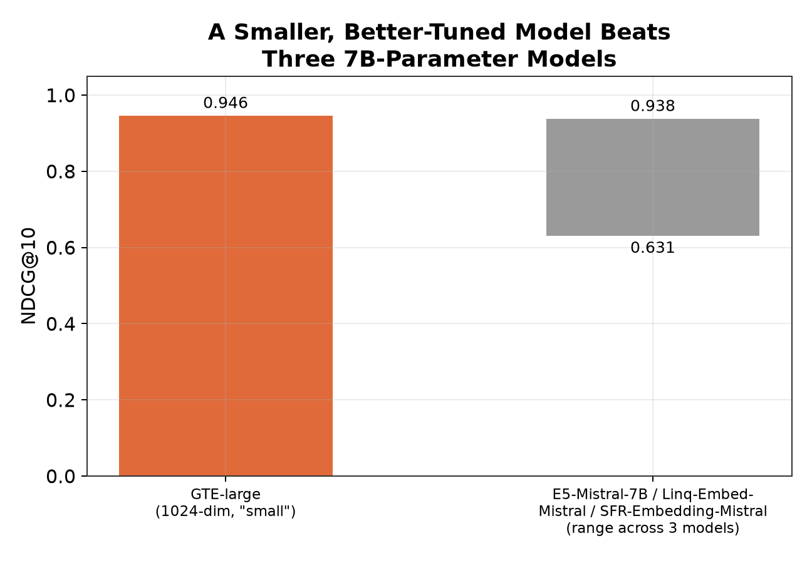

Istari.ai's production company-search system relies on manual keyword filters across 232 countries. My thesis asks whether embedding-based semantic retrieval can beat it on quality while staying production-fast - and finds a free, self-hosted model that matches OpenAI's paid API.

Istari.ai maintains a "Global Organisation Index" of ~20 million companies, but finding the right one today still relies on manual keyword filters. The thesis question: can embedding-based semantic retrieval, paired with approximate-nearest-neighbor search, beat keyword matching on quality - and stay fast enough to run in production? The evaluation corpus: 98,716 companies drawn from 101 real production queries, spanning 232 countries and 22 NACE industry sectors.
Built and run on the University of Mannheim's HPC cluster (A100 GPUs):
rank_bm25) against
three initial dense retrievers via FAISS - MiniLM-L6-v2,
BGE-large-en-v1.5, and OpenAI's text-embedding-3-small.


HyDE query expansion - generating a hypothetical answer and embedding that instead of the raw query - is a popular trick in RAG pipelines. Here it hurt retrieval quality (NDCG@10 dropped from 0.975 to 0.829). Not everything that sounds sophisticated helps; this is exactly the kind of result a production team needs before shipping it.
Reciprocal Rank Fusion of BM25 + MiniLM, on the other hand, matched the MiniLM-only baseline at negligible extra latency (2.2ms) - a much cheaper win than it looks on paper.
Chapters 1–4 - project overview, the Istari.ai data, and the full experimental results above - are written and based on real numbers from completed experiments. Chapters 5–10 (literature review, extended body chapters, final evaluation, conclusions) are still being drafted. The experiments are done; the narrative write-up is the remaining work. I'll update this page as chapters land.